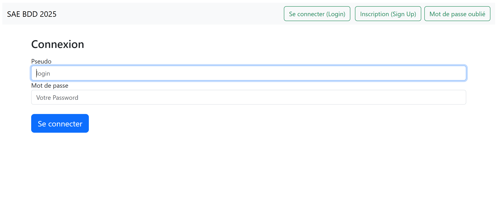
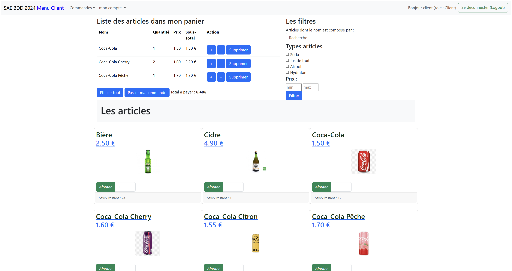
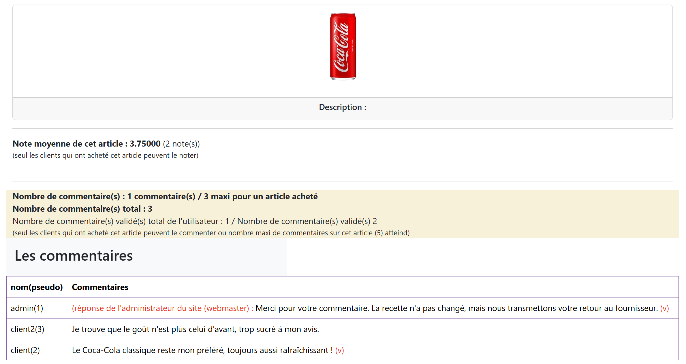
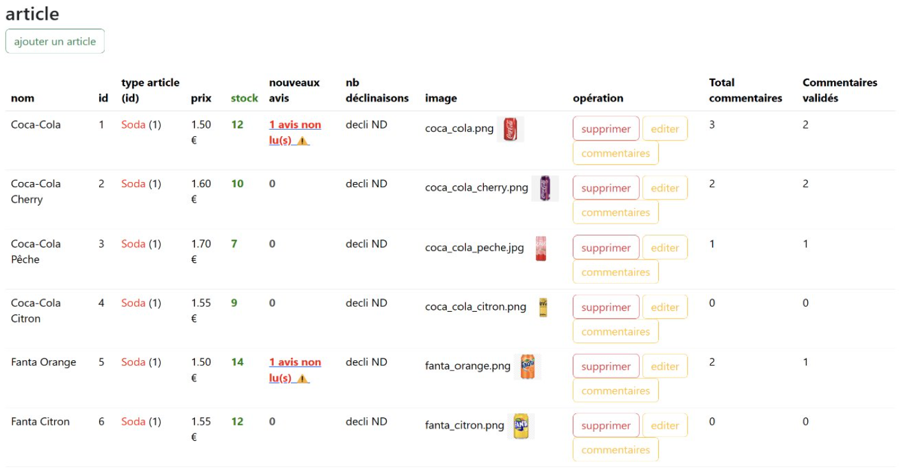

Abreuvetoa
Cliquez
ici pour accéder au site
accéder à un compte client : "client", "client"
accéder au compte administrateur : "admin", "admin"

Abreuvetoa est un projet de groupe visant à créer un site marchand de boissons relié à une base de
données (MySQL) gérée par un framework (Flask). Il présente aussi une gestion des
utilisateurs qui doivent se connecter. Un utilisateur doit renseigner une adresse pour pouvoir se
faire livrer, qu’il peut modifier plus tard.

Une fois connecté ou après avoir créé un compte, les utilisateurs sont dirigés vers le menu du site.
Ce menu présente les différentes boissons avec leurs informations, ainsi qu’un panier et un filtre.
Une fois les articles voulus sélectionnés, une commande a lieu et le panier se vide. Les
utilisateurs ont aussi une liste d’envies et un historique liés à leur compte selon leurs actions
sur
le site.

Lorsque l’on clique sur une boisson, des détails apparaissent sur celle-ci, notamment une note et
des commentaires laissés par d’autres utilisateurs. Ces utilisateurs sont nommés lorsqu’ils laissent
des commentaires. L’administrateur peut aussi leur répondre.

L’administrateur a de nombreux droits, il peut notamment gérer les articles en les modifiant, voir
les informations qui leur sont relatives, etc. Il a notamment accès aux différents profils
utilisateurs avec leurs informations, et peut consulter des tableaux statistiques sur les boissons
et les
catégories de boissons pour voir les plus vendues, les plus commentées, les plus présentes dans les
historiques et listes d’envies des utilisateurs.